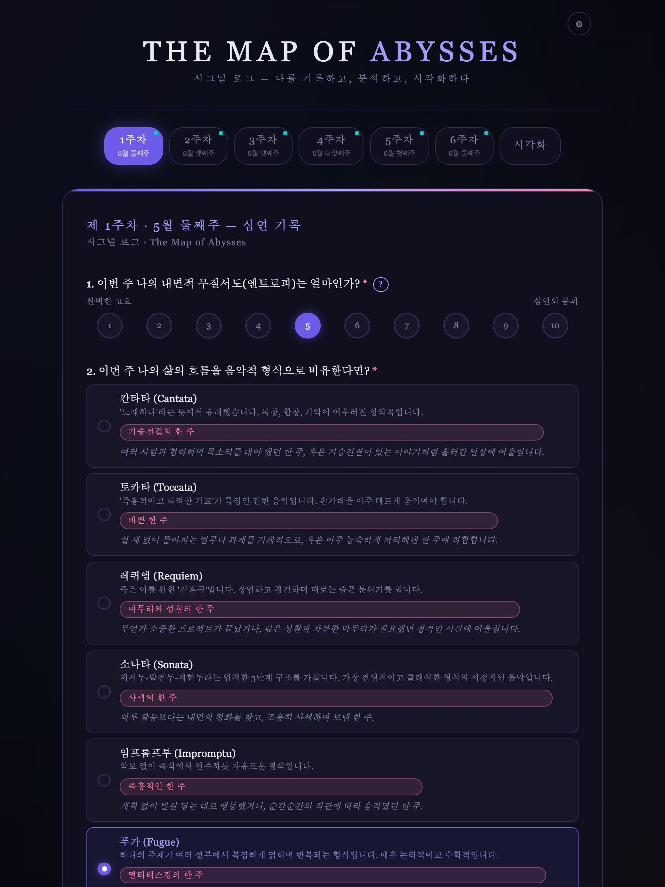

기록
6주간 내면의 무질서도, 감정 키워드, 회복의 순간을 꾸준히 축적한다.
An archive of the inner abyss
시그널 로그 — 6주 개인 아카이브 프로젝트
철학 · 심연 · 엔트로피 · 음악적 형상화
The project at a glance
단순한 감상문이 아니라, 나의 감정 데이터를 해석하는 개인 아카이브.
6주간 내면의 무질서도, 감정 키워드, 회복의 순간을 꾸준히 축적한다.
스피노자·니체·자기조직화(엔트로피) 개념으로 나의 데이터를 해석한다.
음악적 형식과 문장으로 내면의 흐름을 하나의 작품처럼 시각화한다.
Accumulated signal · capture
기록 도구는 구글폼이 아니라, 직접 만든 인터랙티브 웹 아카이브다.

Stage 1 · Accumulated signal
기록은 감정의 진폭을 숫자와 언어로 동시에 드러낸다.
| 주차 | 엔트로피 | 감정 키워드 | 음악 형식 | 핵심 문장 |
|---|
Stage 1 · The curve
숫자는 감정의 깊이를 다 설명하지 못하지만, 변화의 방향을 보여준다.
Stage 1 · Self-organization
도형만으로도 감정이 질서를 찾아가는 과정을 시각화할 수 있다.
"혼돈을 없애는 것이 아니라, 혼돈 안의 신호를 찾아 형식으로 만드는 과정."
Stage 2 · Forms of feeling
음악은 감정의 속도·압력·리듬·회복 방식을 보여주는 언어가 된다.
1주차 · 여러 성부가 얽히는 구조 — 복직·공연·과제를 동시에 끌어안은 멀티태스킹.
2주차 · 여러 목소리가 기승전결로 어우러짐 — 갈등을 중재하며 사람들 사이 목소리를 전달.
3주차 · 형식이 자유롭고 감정 기복이 화려 — 다툼의 격동, 정점의 흔들림.
4주차 · 제시–발전–재현의 회복 구조 — 갈등(발전부)에서 화해(재현부)로.
5주차 · 무대를 앞둔 에너지 응축 — 마지막 기행을 위한 결의의 준비.
6주차 · 몰아치는 기교를 능숙하게 처리 — 시험·과제·마무리의 고밀도.
선택의 핵심은 형식의 이름이 아니라, 그 형식이 그 주의 데이터와 왜 맞닿는지에 있다.
Stage 3 · Theory ①
엔트로피가 치솟은 주차에 나의 행위역량은 어떻게 무너졌는가?
스피노자에게 기쁨은 행위역량(자신을 보존하려는 힘, conatus)의 증대이고, 슬픔은 그 감소다. 3주차, 가장 가까운 사람과의 다툼으로 나의 엔트로피는 9까지 치솟았다. 이는 단순한 기분이 아니라 무언가를 시작할 힘조차 줄어든 역량의 급감이었다. 그러나 4주차, 회피 대신 대화를 택하자 역량은 회복되기 시작했다(7). 나의 엔트로피 곡선은 곧 행위역량의 그래프였다 — 관계 속에서 나의 힘은 줄고, 또 늘었다.
Stage 3 · Theory ②
고통을 통과한 힘은 새로운 가치로 전환될 수 있는가?
니체는 인간을 '극복되어야 할 무엇'으로 보았고, 고통을 제거 대상이 아니라 자기를 넘어서는 출발점으로 읽었다. 3주차의 균열은 나를 무너뜨리기만 한 것이 아니라, 내가 무엇을 견딜 수 있는 사람인지 확인하게 했다. 그 통과의 경험은 5주차 '마지막 과업을 잘 마무리하겠다'는 결의와 6주차의 '끝과 시작을 동시에 짊어지는' 밀도로 이어졌다. 나는 다툼을 후회로 남기지 않고, 그것을 운명으로 끌어안아(amor fati) 다음 동력으로 바꾸었다.
Stage 3 · Theory ③
혼돈은 어떻게 스스로 질서를 만드는가?
열역학에서 엔트로피는 무질서의 척도다. 복잡계는 고엔트로피 상태에서 외부와 에너지를 주고받으며 스스로 패턴을 만들어낸다 — 자기조직화. 나의 6주는 정확히 이 과정이었다. 3주차의 무질서(엔트로피 9)는 사라지지 않았다. 대신 나는 그 혼돈 속에서 반복되는 신호 — 책임감, 관계를 지키려는 의지 — 를 감지했고, 그것을 음악적 형식(랩소디→소나타→토카타)이라는 질서로 수렴시켰다. 융합인문공학도로서 나는 감정을 '없애야 할 노이즈'가 아니라 '형식을 찾아야 할 신호'로 다루었다.
Stage 4 · The sentence
"And when you gaze long into an abyss, the abyss also gazes into you."심연을 오래 들여다보면, 심연도 너를 들여다본다. — 니체
나는 6주간 나의 심연을 들여다보았고, 거기서 나를 마주 보는 한 문장을 건졌다.
나의 심연은 무너짐이 아니라,
무너진 자리에서도 끝내 책임과 사랑을 놓지 않으려는 힘이었다.
Conclusion
책임감, 관계를 지키려는 사랑, 끝까지 마무리하려는 성실함 — 혼돈의 주차마다 반복해 나타난 이 세 신호가 나를 다시 일으킨 동력이었다.
기록은 나를 설명하는 데이터가 되고, 해석은 나를 움직이게 하는 힘이 된다.